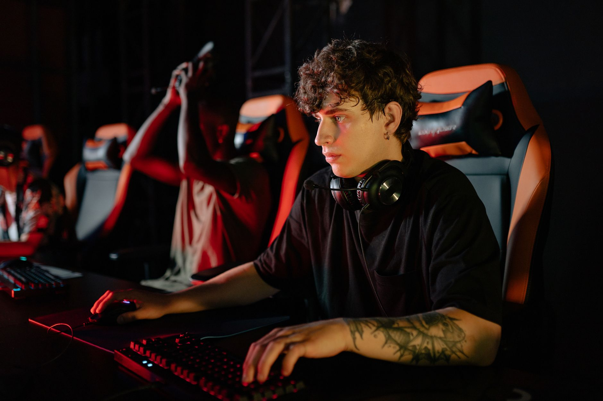

A reality check in the competitive scene
The esports landscape is more competitive than ever, with massive organizations and individual talents constantly vying for the top spot on global leaderboards. In a recent interview that has caught the attention of fans and analysts alike, zont1x provided a grounded perspective on his team's current standing. While many expected a boastful claim of dominance following recent improvements, the player chose a much more measured and analytical approach.
This sense of realism is becoming a recurring theme among elite players who understand that consistency is the hardest metric to master. It is one thing to win a single tournament or a series of matches, but it is an entirely different challenge to maintain that level of play against the world's most elite rosters over an extended period. Zont1x emphasized that while the progress is visible, the ultimate goal of being the undisputed number one remains a distant target.
Defining greatness through results
For many fans, greatness is often measured by hype, social media engagement, or a single spectacular performance. However, for professional players like zont1x, greatness is strictly a matter of data, trophies, and long-term stability. He pointed out that the team has yet to secure the kind of significant, high-level results that would allow them to claim they are the best in the world without question.
We don't yet have significant results to say that we are the best.
This statement serves as a reminder that in professional esports, reputation must be earned through repeated success in Tier 1 competitions. A single upset victory does not change the hierarchy of the scene, and zont1x seems to have a deep respect for the established giants who have spent years solidifying their legacies through consistent championship runs.
The roadmap to the top tier
If the team is not yet the best, what are they doing to get there? The interview touched upon the internal processes that allow a team to bridge the gap between being a contender and being a champion. It involves more than just mechanical skill; it requires a psychological shift and a strategic evolution that can withstand the pressure of major stages.
By focusing on these specific areas, the team aims to move away from being a 'dark horse' and toward becoming a permanent fixture at the top of the rankings. This disciplined approach is what separates teams that peak early from those that build long-lasting dynasties.
Analyzing the current competitive gap
The gap between the top five teams in the world and the rest of the field is often razor-thin, yet it is incredibly difficult to cross. Zont1x's comments highlight the awareness of this gap. He recognizes that while his team can compete with anyone on a good day, the elite teams possess a level of consistency that his squad is still striving to replicate.
This gap is often found in the small details: the way a team handles a losing streak, the efficiency of their utility usage, or their ability to adapt to a meta shift mid-season. For zont1x and his teammates, the mission is to minimize these errors until they are no longer the deciding factor in their matches.
Looking ahead to future tournaments
As the season progresses, all eyes will be on this team to see if they can turn their words into action. The upcoming schedule provides multiple opportunities to gather the 'significant results' that zont1x mentioned. Every match is now a test of their resolve and a step toward validating their potential.
Fans are eager to see if the team can maintain their upward trajectory. While the road to the top is long and filled with setbacks, the humility shown by the players suggests a team that is focused on the grind rather than the glory. This mindset is often a precursor to great success in the professional gaming circuit.
In a similar vein of team restructuring and roster movements, keep an eye on other major shifts in the scene, such as when Cobrazera Rejoins The MongolZ for FISSURE Playground 3, which shows how vital roster stability is for success. Just as the MongolZ are looking to solidify their lineup, zont1x's team is looking to solidify their status.
See Also
If you enjoyed this Esports News article, check out Cobrazera Rejoins The MongolZ for FISSURE Playground 3 for more useful reading.